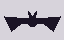
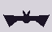

летучих мышей больше тысячи видов. кровь выбрали только три, и все живут в новом свете.
Desmodus rotundus, Diaemus youngi и Diphylla ecaudata. записал, чтобы потом не искать заново.


они не высасывают. надрез и слизывают.
один файл в этой полосе открывается только после третьего взгляда.